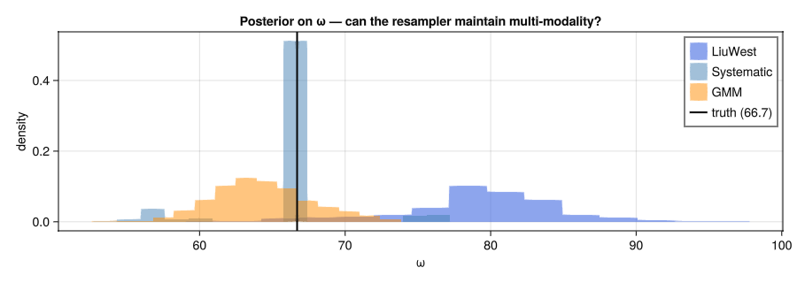

Resampling Strategies
A particle filter approximates the posterior as a weighted set of parameter samples. When new observations arrive, each particle's weight is multiplied by the likelihood of the observation under that parameter value. Over time, a few particles accumulate most of the weight and the rest become negligible — particle impoverishment. Resampling addresses this by periodically drawing a fresh set of equally-weighted particles from the current distribution.
OptimalDesign.jl provides three strategies with different trade-offs between speed, diversity preservation, and ability to handle multi-modal posteriors.
The three strategies
LiuWestResampling (default)
Systematic resampling followed by kernel jitter in unconstrained parameter space. After resampling, each particle is perturbed by a small Gaussian noise term so that no two particles are identical. The shrinkage coefficient a (default 0.98) controls the jitter magnitude: larger a → smaller perturbation.
prior = Particles(prob, 2000) # default a=0.98
prior = Particles(prob, 2000; resampling = LiuWestResampling(a = 0.95)) # more jitterBest for: well-behaved unimodal posteriors with bounded or unbounded parameters. The kernel jitter prevents exact duplication and handles parameter constraints correctly by working in transformed (unconstrained) space.
SystematicResampling
Plain systematic resampling with no jitter. Particles are duplicated according to their weights, then weights are reset to uniform. No additional noise is added.
prior = Particles(prob, 2000; resampling = SystematicResampling(ess_threshold = 0.5))Best for: baseline comparisons, or when the posterior is already represented by enough particles that duplication is not a concern. Fastest of the three.
GMMResampling
Fits a Gaussian Mixture Model (full covariance, BIC-guided number of components) to the current particle distribution, then draws a fresh sample from the fitted mixture. This avoids particle impoverishment even for strongly multi-modal posteriors.
prior = Particles(prob, 2000; resampling = GMMResampling(ess_threshold = 0.5, k_max = 8))Best for: posteriors with multiple separated modes — for example, frequency estimation in a periodic model where several aliased values all explain the data equally well.
Optional diagnostic plots:
prior = Particles(prob, 2000;
resampling = GMMResampling(k_max = 6, log_dir = "gmm_diagnostics/"))Setting log_dir writes a three-panel PNG for every resample event showing the incoming particles (coloured by log-weight), the fitted mixture contours, and the outgoing resampled cloud.
Configuring the ESS threshold
All three strategies trigger resampling when the effective sample size (ESS) drops below a fraction of the particle count:
\[\text{ESS} = \frac{\left(\sum_i w_i\right)^2}{\sum_i w_i^2} < \text{ess\_threshold} \times N\]
A lower threshold means less frequent resampling; a higher threshold means resampling after every informative observation.
# Resample only when fewer than 25 % of particles are "active"
Particles(prob, 2000; resampling = LiuWestResampling(ess_threshold = 0.25))
# Resample aggressively — after nearly every observation
Particles(prob, 2000; resampling = GMMResampling(ess_threshold = 0.9))Example: multi-modal frequency posterior
The damped cosine is a challenging case: when early-time measurements resolve the amplitude but not the frequency, several aliased $\omega$ values fit the data equally well and the posterior on $\omega$ becomes multi-modal.
using OptimalDesign
using CairoMakie
using ComponentArrays
using Distributions
model(θ, x) = θ.A * cos(θ.ω * x.t) * exp(-θ.R * x.t)
θ_true = ComponentArray(A = 50.0, ω = 66.7, R = 8.0)
σ = 10.0
acquire(x) = model(θ_true, x) + σ * randn()prior_specs = (
A = LogUniform(1.0, 500.0),
ω = Uniform(1.0, 100.0),
R = Uniform(0.1, 10.0),
)
# select(:A) focuses measurements at early times to resolve amplitude,
# leaving ω under-constrained and multi-modal
prob = DesignProblem(model;
parameters = prior_specs,
transformation = select(:A),
sigma = Returns(σ),
criterion = EIGCriterion(outer_samples = 40, inner_samples = 40))
candidates = candidate_grid(t = range(0.005, 1.0, length = 80))Run three identical experiments — same prior, same random seed, different resampler:
budget = 15
Random.seed!(42)
prior_lw = Particles(prob, 1000; resampling = LiuWestResampling(ess_threshold = 0.5))
Random.seed!(42)
prior_sys = Particles(prob, 1000; resampling = SystematicResampling(ess_threshold = 0.5))
Random.seed!(42)
prior_gmm = Particles(prob, 1000; resampling = GMMResampling(ess_threshold = 0.8, k_max = 5))Random.seed!(42)
result_lw = run_adaptive(prob, candidates, prior_lw, acquire;
budget = Float64(budget), headless = true)
Random.seed!(42)
result_sys = run_adaptive(prob, candidates, prior_sys, acquire;
budget = Float64(budget), headless = true)
Random.seed!(42)
result_gmm = run_adaptive(prob, candidates, prior_gmm, acquire;
budget = Float64(budget), headless = true)[ Info: Adaptive experiment: budget=15.0, 80 candidates, 3 parameters (A, ω, R)
[ Info: Step 10/15: spent=10.0/15.0, ESS=793.0, posterior=(A=50.055, ω=52.87, R=5.499)
[ Info: Experiment complete: 15 observations, cost=15.0/15.0, ESS=507.0
[ Info: Final posterior: A=52.827, ω=79.199, R=7.565
[ Info: Adaptive experiment: budget=15.0, 80 candidates, 3 parameters (A, ω, R)
[ Info: Step 10/15: spent=10.0/15.0, ESS=1000.0, posterior=(A=57.236, ω=63.384, R=6.296)
[ Info: Experiment complete: 15 observations, cost=15.0/15.0, ESS=1000.0
[ Info: Final posterior: A=57.43, ω=65.857, R=6.358
[ Info: Adaptive experiment: budget=15.0, 80 candidates, 3 parameters (A, ω, R)
[ Info: Step 10/15: spent=10.0/15.0, ESS=1000.0, posterior=(A=51.958, ω=64.541, R=6.806)
[ Info: Experiment complete: 15 observations, cost=15.0/15.0, ESS=906.0
[ Info: Final posterior: A=50.937, ω=64.296, R=6.969post_lw_ω = [θ.ω for θ in OptimalDesign.sample(result_lw.posterior, 2000)]
post_sys_ω = [θ.ω for θ in OptimalDesign.sample(result_sys.posterior, 2000)]
post_gmm_ω = [θ.ω for θ in OptimalDesign.sample(result_gmm.posterior, 2000)]
fig = Figure(size = (900, 320))
ax = Makie.Axis(fig[1, 1]; xlabel = "ω", ylabel = "density",
title = "Posterior on ω — can the resampler maintain multi-modality?")
hist!(ax, post_lw_ω; normalization = :pdf, color = (:royalblue, 0.6), label = "LiuWest")
hist!(ax, post_sys_ω; normalization = :pdf, color = (:steelblue, 0.5), label = "Systematic")
hist!(ax, post_gmm_ω; normalization = :pdf, color = (:darkorange, 0.5), label = "GMM")
vlines!(ax, [θ_true.ω]; color = :black, linewidth = 2, label = "truth ($(θ_true.ω))")
axislegend(ax; position = :rt)
fig
With only 15 measurements, the three strategies typically produce different posteriors. Systematic resampling can collapse onto a single mode early. LiuWest retains some diversity through jittering. GMM explicitly models multi-modality and maintains representation across modes.
Choosing a strategy
| | LiuWestResampling | SystematicResampling | GMMResampling | |–|:–:|:–:|:–:| | Handles bounded parameters | ✓ | ~ | ✓ | | Jitters to prevent exact duplication | ✓ | ✗ | ✓ | | Multi-modal posterior | ~ | ✗ | ✓ | | Speed | fast | fastest | slowest | | Default? | ✓ | — | — |
Start with LiuWestResampling (the default). Switch to GMMResampling if you observe premature particle collapse on a model you know should have a multi-modal posterior — for example, a periodic model with a broad frequency prior, or any model where symmetry arguments suggest multiple equivalent solutions.
See also
- Posterior Inference — particle filter mechanics and likelihood tempering
- Adaptive Design — the full adaptive experiment loop
- EIG vs D-optimality — when EIG is preferred over FIM-based criteria